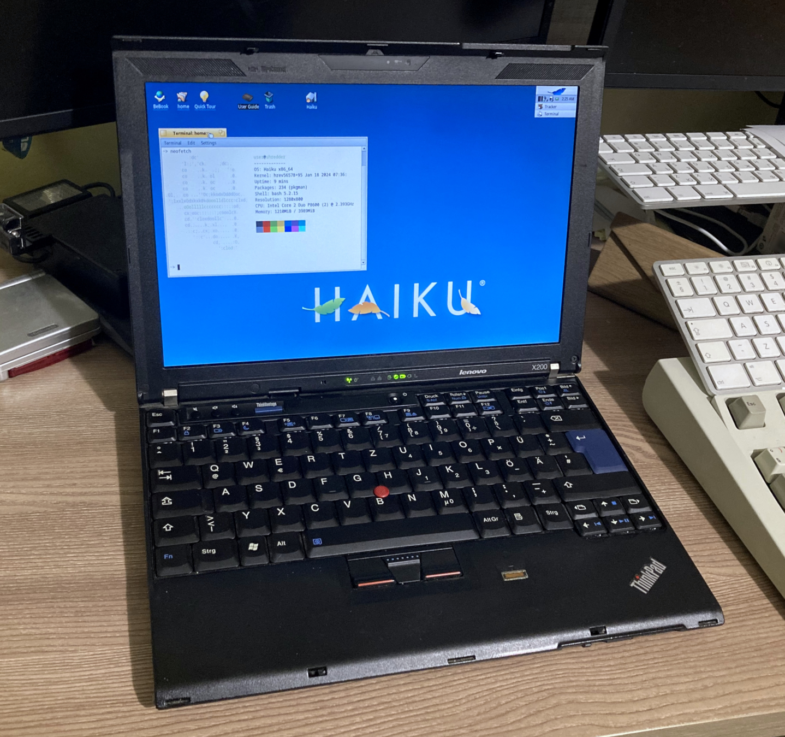

|  | CPU: 2.4 GHz Intel Core 2 Duo P8600Memory: 8 GB DDR3Storage: 120 GB SATA SSDGPU: Intel GMA 4500MHD using up to 384 MB of system memoryOS: Devuan LinuxCondition: Works perfectly |
I own or have tried every X series ThinkPad from the X41 to the X230, except for the X200/X201. I thought it was cool because it's kind of a mix between the older and newer ones - it has a widescreen display, DDR3, the new logo on the lid and palm rest and etc but it also still uses the old design language and looks a lot like the X61. Also it has the older keyboard, older fingerprint reader (X200), and most noticeably - no touchpad (X200)!
So I got one for 50 euros, not dirt cheap but not expensive either. The X61 usually goes for about the same price here and the X201 is twice as much. Mine came with the smaller 6-cell battery that's flush to the back of the machine and it lasts ~30 minutes. Also it seems to not have been upgraded much because it has a 150 GB HDD and 4 GB of RAM. It's not the lowest-end config because it has a P8600, modem and fingerprint reader
I really love that the screen is 16:10 unlike the later X220/X230. Also that it doesn't have a touchpad. And it's so upgradable and expandable - not only is it full of ports on either side, including a full ExpressCard/54 slot but it has 3 mPCI slots inside - one for the Wi-Fi card, the other two being for the Intel Turbo Memory and WWAN card from what I can tell.
Update 26/01/24 - Updated the RAM from 4 to 8 GB, replaced 150 GB HDD with 120 GB SSD, purchased a new 9-cell battery


{kind=link}